This Issue
August 2026 edition
$88,450 vs $105,000
Median gross margin on flips resold this edition against a year ago, with the median resale price effectively flat at $225,000 vs $224,000
Flip resale prices held flat while gross margins compressed: the squeeze moved to the acquisition side
Flip exits held their price: 154 flips cleared at a median $225,000 against $224,000 a year ago, and per-foot pricing rose to $197.18 from $182.88. The spread did not hold. Median gross margin fell to $88,450 from $105,000, and margin over basis to 54% from 83%, which puts the compression on the buy side rather than the exit. Operators also turned stock faster, a median 173.5 days held versus 209. Margins here are gross — rehab and carry are not in public record — so the recorded cushion overstates what is left net.
Investor Playbook
What this issue's numbers suggest checking, by investor type. Observations from recorded data — not investment, legal, or tax advice.
Price the assignment to a 54% gross margin, not last year's 83%
Wholesalers
The buyer pool is underwriting to a median $88,450 gross spread, down from $105,000, so contracts written at a year-ago basis are the ones sitting. The data suggests the deepest buy-side volume is still in 40214 ($167,500 median buy), 40216 ($174,000), 40215 ($109,098) and 40211 ($69,000). Only 4 assignments surfaced on recorded deeds this edition — treat that as a floor, not the market.
Hold the exit assumption, cut the basis
Flippers
Resale medians did not move ($225,000 vs $224,000) and per-foot exits improved to $197.18, so the loss came from acquisition. Worth re-running offers against the standing product profile — 1,222 sqft, 3 beds, built 1963, 22.6% pre-1950 — and a 173.5-day median hold, which is five weeks shorter than a year ago. Sale-to-assessed slipped to 1.41 from 1.49, a signal that stretch exits are getting harder to prove out.
Watch tired flip stock and the 2-4 unit basis gap
Landlords
61 flips aged out of the pipeline in the latest recorded month, the highest reading in this series' recent run, and pipeline inventory drew down to 3,624 from 3,938 in May 2025 — that combination usually produces sellers with holding fatigue. On basis, 2-4 units traded at $129/sqft against $147/sqft for single family (25 vs 774 deals), which is worth checking parcel by parcel before defaulting to houses.
Recorded private paper thinned while seller notes filled in
Private lenders
37 recorded private loans against 87 a year ago, at a $124,500 median versus $150,000. Over the trailing twelve months 49.7% of 837 observed purchases carried recorded financing and 69.5% of those 416 loans funded rehab, with a median loan of $155,000 at a 1.25 loan-to-price. The gap now sits in short-hold rehab paper on sub-$200,000 basis; note that rates and terms are not recorded and are not published here.
Small multi has basis advantage and a thin exit
Multifamily investors
Apartment 5+ cleared 31 deals at a $550,000 median ($156/sqft) and 2-4 units 25 deals at $215,000 ($129/sqft). But small multi was only 1.3% of flips resold, so an exit-by-resale plan has almost no comp support — the data supports underwriting these as holds. Recorded activity clustered in Jefferson County, which took 78.6% of flips against 71.8% a year ago.
Factoids
Numbers from this period a practitioner would repeat to a colleague. Each computed directly from recorded instruments.
1,120 investor purchases at a $199,000 median — Recorded residential investor purchases this edition and their median price
trending up · vs 956 at $210,000 a year ago
Volume is up 17% year over year while the median price paid is down $11,000. More deals are clearing at a lower headline basis, though flip margin data suggests rehab-grade product is not getting cheaper.
$197.18 per sqft on flip resales — Median resale price per square foot on flips sold, against the same period a year ago
trending up · vs $182.88 a year ago
Exit pricing per foot improved on essentially unchanged product — median 1,222 sqft, 3 beds, built 1963. Underwriting an exit near this per-foot level is defensible; underwriting last year's margin is not.
173.5 days median hold — Median days held on flips resold this edition versus a year ago
trending down · vs 209 days a year ago
Turn times shortened by roughly five weeks at the median, with 28% of resales inside 90 days. Faster turns reduce carry, which matters more now that gross spread is thinner.
45.8% top-10 revenue share — Share of flip resale revenue recorded by the ten largest operators, versus a year ago
trending up · vs 34.1% a year ago
Resale dollars are more concentrated in a handful of operators than a year ago. Sellers of rehab-grade inventory have fewer high-volume end buyers to shop to.
129 seller-held notes vs 37 recorded private loans — New seller-financed notes and recorded private loans this edition
trending up · notes were 48 and private loans 87 a year ago
Seller paper nearly tripled year over year at a $160,000 median while recorded private loans fell 57% to a $124,500 median. Structured seller terms are absorbing financing that used to appear as recorded third-party debt.
40218 at 5.8% of flips, 40219 at 7.1% — Zip share of flips resold this edition versus the same period a year ago
trending up · 40218 was 1.0% and 40219 was 3.3% a year ago
Buechel and Okolona took a materially larger share of resales while Shively (40216) slipped to 3.2% from 6.2%. Comp pulls built on last year's zip mix will misprice both directions.
Market Activity — Investor Purchases
Monthly count of investor purchases of MSA properties (left axis) and the median purchase price (right axis), trailing 13 months. The most recent month can grow up to ~15% as late recordings arrive.
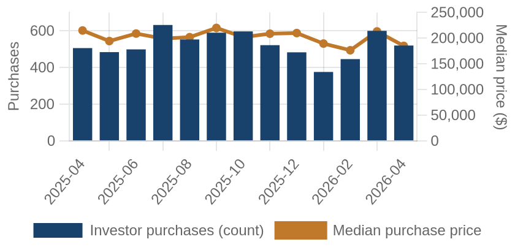
Investor purchases per month (bars) and median purchase price (line), trailing 13 months.
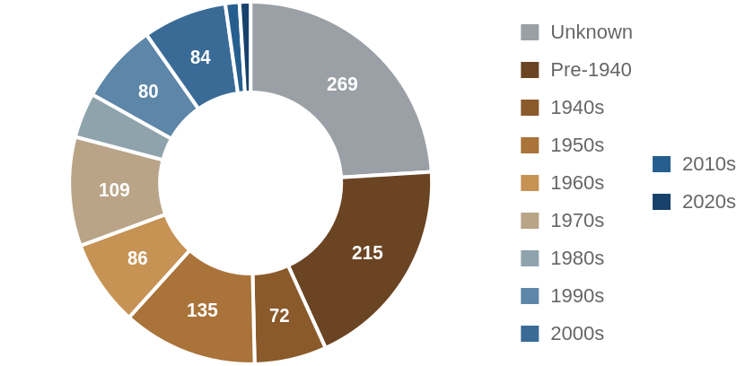
Which vintage of housing investors bought this edition, by decade built.
Where the Money Went
The geography of the period's investor activity: which zip codes saw the most recorded deals, and the largest individual transactions at street level.
The 8 busiest zip codes for investor deals
Pins rank the busiest zips by recorded investor deals (purchases + flips of existing homes) this period — #1 busiest; orange = top 3; pin size scales with deal volume. Median buy is the typical investor purchase; median sale the typical flip resale. Click a pin for details; full table below.
| # | Zip | Area | Purchases | Flips | Median buy | Median sale |
|---|
| #1 | 40214 | Iroquois | 50 | 12 | $167,500 | $300,324 |
| #2 | 40216 | Shively | 49 | 5 | $174,000 | $185,000 |
| #3 | 40215 | Beechmont | 46 | 3 | $109,098 | n/a |
| #4 | 40211 | Shawnee | 42 | 5 | $69,000 | $76,500 |
| #5 | 40272 | Valley Station | 31 | 14 | $160,000 | $215,000 |
| #6 | 40212 | Portland | 40 | 3 | $68,000 | n/a |
| #7 | 40258 | Pleasure Ridge Park | 33 | 10 | $187,500 | $212,500 |
| #8 | 40219 | Okolona | 30 | 11 | $230,500 | $240,000 |
A representative deal in each of the busiest zips
One deal per zip: the largest matching this market's typical house (typical for this market: 1158 sqft, 2 bed, built around 1961; priced within 4x the county assessment and under 5x its own zip's median).
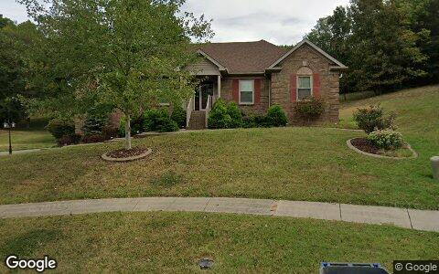
$370,000 · Purchase
3303 GATECREEK RD, Louisville KY 40272
Single family · 1,840 sqft · Mar 31
Street View Sep 2024 — before the purchase
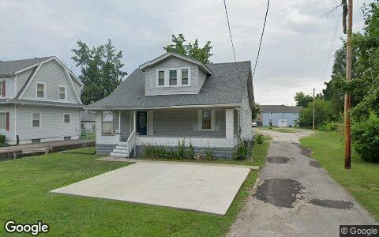
$310,000 · Purchase
1731 MEYERS LN, Louisville KY 40216
Apartment 5+ · 1,470 sqft · Mar 3
Street View Jul 2024 — before the purchase
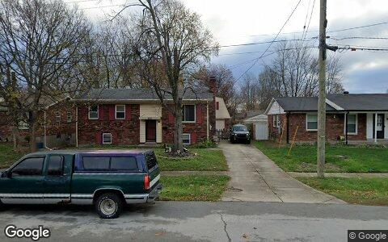
$300,000 · Purchase
8105 HORIZON LN, Louisville KY 40219
Single family · 1,014 sqft · Mar 2
Street View Nov 2024 — before the purchase
$245,000 · Purchase
7912 3RD STREET RD, Louisville KY 40214
Single family · 1,460 sqft · Apr 29
Street View Sep 2024 — before the purchase
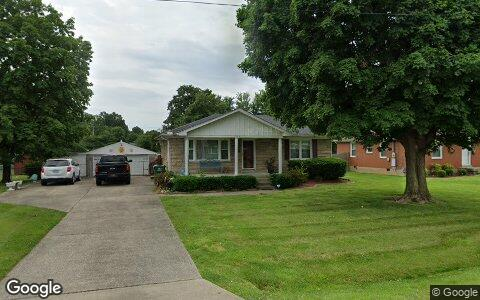
$245,000 · Purchase
5250 JULIA RD, Louisville KY 40258
Single family · 1,213 sqft · Apr 13
Street View Jun 2022 — before the purchase
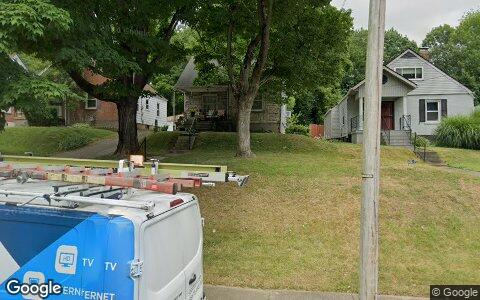
$200,000 · Purchase
4655 CLIFF AVE, Louisville KY 40215
Single family · 878 sqft · Mar 6
Street View Jun 2024 — before the purchase
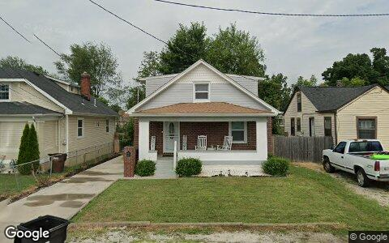
$190,000 · Purchase
3408 CANE RUN RD, Louisville KY 40211
Single family · 916 sqft · Mar 4
Street View Jul 2024 — before the purchase
$110,000 · Purchase
114 S 43RD ST, Louisville KY 40212
Single family · 1,411 sqft · Mar 9
Street View Jun 2024 — before the purchase
Deal sheet — private lending, in date order
Private loans recorded against residential property this period, oldest first.
| Date | Lender | Amount | Property | Use |
|---|
| Mar 3 | Burnett Joseph | $310,000 | 1731 Meyers LN, Louisville KY 40216 | Apartment 5+ |
| Mar 6 | Burnett Joseph | $50,000 | 1190 Bicknell Ave, Louisville KY 40215 | Single family |
| Mar 16 | Oatley Matthew | $165,000 | 706 Greenwood CT, Shelbyville KY 40065 | Single family |
| Mar 17 | Fonk Ronald | $200,000 | 5146 Bell Ave, Shelbyville KY 40065 | Single family |
| Mar 17 | Gollar Sandy | $104,155 | 135 Cotton LN, Taylorsville KY 40071 | Single family |
Largest flip margin deals of the period, at street level
Gross margin = recorded sale price minus the flipper's recorded purchase price. Purchase deeds are recoverable for roughly 4 in 10 flips; rehab and carry costs are not public record.
$446,000 gross · bought $254,000 (May 2025) → sold $700,000
13206 CREEKVIEW RD, Prospect KY 40059
Single family · 2,455 sqft · Apr 21
Street View Nov 2024 — before the flip (pre-renovation)
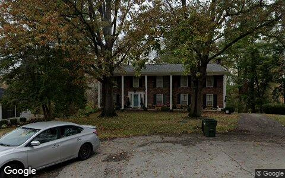
$315,000 gross · bought $345,000 (Nov 2025) → sold $660,000
6710 TALLWOOD CT, Prospect KY 40059
Single family · 3,570 sqft · Apr 16
Street View Nov 2024 — before the flip (pre-renovation)
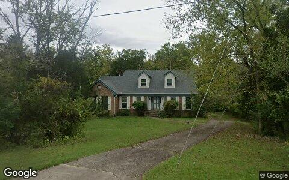
$274,780 gross · bought $220,220 (Oct 2025) → sold $495,000
1015 BENTON RIDGE DR, Louisville KY 40245
Single family · 2,414 sqft · Mar 16
Street View Sep 2024 — before the flip (pre-renovation)
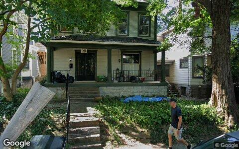
$219,000 gross · bought $307,000 (Dec 2024) → sold $526,000
1822 TYLER PKWY, Louisville KY 40204
2-4 units · 2,107 sqft · Apr 14
Street View Jul 2024 — before the flip (pre-renovation)
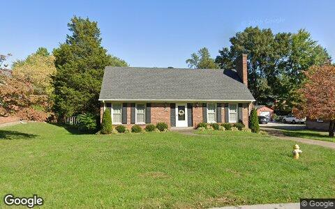
$209,500 gross · bought $175,000 (Mar 2025) → sold $384,500
6505 RIDGE CLIFF RD, Louisville KY 40228
Single family · 2,194 sqft · Mar 23
Street View Oct 2024 — before the flip (pre-renovation)
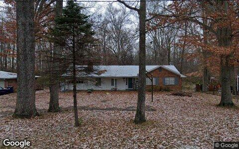
$202,600 gross · bought $132,400 (Feb 2025) → sold $335,000
7906 OLD STATE ROAD 60, Sellersburg IN 47172
Single family · 1,428 sqft · Mar 4
Street View Dec 2024 — before the flip (pre-renovation)
Flip Structure — Year over Year
How the flip market itself is changing: margins, who is doing the flipping, what they flip, and where. Same two calendar months, this year vs last, from the current data extract.
| Flip market structure | Same months last year | This edition |
|---|
| Flips sold | 209 | 154 |
| Median sale | $224,000 | $225,000 |
| Median $/sqft | $183 | $197 |
| Sale vs county-assessed | 1.49× | 1.41× |
| Median gross margin (matched buys) | $105,000 | $88,450 |
| Median margin % | 83% | 54% |
| Median hold | 6.9 mo | 5.7 mo |
| Homes bought by flippers | 277 | 231 |
| Net to inventory (bought − sold) | +68 | +77 |
| Active flippers | 160 | 104 |
| Top-10 flippers' revenue share | 34% | 46% |
| Median house: sqft / beds / built | 1216 / 2 / 1961 | 1222 / 3 / 1963 |
| Pre-1950 stock share | 30% | 23% |
| 2–4 unit share | 1% | 1% |
| Median distance from downtown | 15.2 km | 15.2 km |
Homes bought counts every deed recorded to a known flipper in the window, resold or not. Net to inventory is that minus flips sold. The standing stock is in the Flip Pipeline section.
Attributed profit per flip (per-investor aggregates, by drop period): Feb 26→Jun 26: 514 flips, $60,447/flip · Jun 26→Aug 26: 149 flips, $81,759/flip.
County mix (share of flips, last year → this edition): Jefferson 72%→79% · Oldham 2%→7% · Clark 3%→5% · Floyd 5%→3% · Shelby 2%→2% · Henry 0%→2% · Bullitt 5%→1% · Trimble 1%→1% · Meade 1%→1% · Washington 1%→0% · Harrison 1%→0% · Scott 6%→0% · Spencer 1%→0%.
Biggest zip share moves: Buechel 1.0%→5.8% · Beechmont 5.7%→1.9% · Okolona 3.3%→7.1% · Fairdale 0.5%→3.9% · Shively 6.2%→3.2% · Scottsburg 2.9%→0.0%.
Flip Pipeline — Buying, Selling and Inventory
Homes bought by known flippers and homes they resold, per month, alongside the stock sitting in flipper hands. A house enters inventory when a flipper buys it and leaves on the next recorded sale, at any price. Purchases still unsold after five years are treated as holds and drop out.
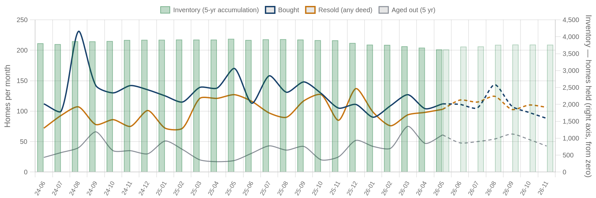
Solid = recorded, dashed = projected. Green bars are inventory on the right axis: homes bought and not yet resold. Aged out is purchases passing five years unsold. Inventory moves by bought minus resold minus aged out.
| Flip pipeline | Bought / mo | Resold / mo | Aged out / mo | Inventory |
|---|
| Latest recorded month (2026-05) | 112 | 103 | 61 | 3,624 |
| Projected (2026-11) | 88 | 106 | 43 | 3,765 |
Method: a straight-line trend through the last 24 months, adjusted for the month of the year, shown dashed as a projection. The series stops before the newest month or two, where deeds are still recording.
Who's Funding the Deals
First mortgages open on flipper purchases from May 2025 – Apr 2026 that have not yet resold. 50% carried recorded debt; the rest closed cash or off-record. Ranked by deal count.
50%
Purchases financed
416 of 837 flipper purchases carried a recorded first mortgage
$155,000
Typical loan
median 1.25× the purchase price — the median lender advances rehab money on top of the buy
69%
Funding the rehab too
289 of 416 loans exceed the purchase price, so the lender is covering work as well as the buy
| Lender | Loans | Borrowers | Median loan | Loan vs price | Funds rehab | Median purchase |
|---|
| MM Lending LLC | 29 | 17 | $169,709 | 1.53× | 97% | $105,000 |
| Burnett Joseph | 20 | 11 | $160,500 | 1.34× | 75% | $130,500 |
| River City Bank INC | 17 | 13 | $164,724 | 1.03× | 53% | $165,000 |
| Surepoint Equity LLC | 16 | 8 | $201,750 | 1.33× | 88% | $165,000 |
| United Wholesale Mortgage LLC | 16 | 13 | $157,125 | 1.36× | 88% | $130,500 |
| Flippin Loan LLC | 15 | 12 | $127,500 | 1.48× | 100% | $90,000 |
| Prime One LLC | 15 | 8 | $157,250 | 1.25× | 93% | $116,000 |
| Stock Yards Bank & Trust Co | 9 | 8 | $196,377 | 1.50× | 56% | $137,000 |
| Annex Capital INC | 8 | 5 | $259,000 | 1.70× | 100% | $125,000 |
| Jpmorgan Chase Bank NA | 8 | 7 | $83,228 | 0.93× | 38% | $86,500 |
Rates and terms are not published: the county feed models both. Borrowers counts the distinct flippers on each lender's book. Loan vs price is the recorded first mortgage divided by what the buyer paid. Above 1.00x the lender is funding purchase plus rehab; below it the buyer brought cash to the table. Blanket mortgages covering several parcels are excluded, as are loans outside 0.1x-3x the price. Rates and points are not public record.
Flipper Profile — The Working Flipper
The 70th–90th percentile of local flippers by lifetime flip count — the established operators below the whales: 3–8 lifetime flips each. Bath counts are not in the assessor extract.
327
Flippers in the band
each with 3–8 lifetime flips (avg 4.3)
$82,000
Median gross margin
1,368 flips matched to their purchase price
4.8 mo
Typical hold
purchase to resale, matched deals
1158 sqft · 2 bd
Typical house
median year built 1961
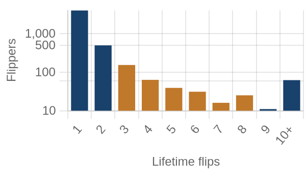
flippers by lifetime flips · orange = this band
Where they work: New Albany (47150) 7% · Shively (40216) 5% · Iroquois (40214) 5% · Pleasure Ridge Park (40258) 5% · Valley Station (40272) 5%.
Market Pulse
| per month, Feb–Jun 2026 | per month, Jun–Aug 2026 | change | avg/mo 2yr | avg/mo 4yr |
|---|
| ▼ Homes bought by flippers | 139 | 116 | -17% | 130 | 132 |
| ▼ Flips sold (deeds) | 105 | 77 | -26% | 98 | 96 |
| ▲ Lending deals funded | 38 | 51 | +32% | — | — |
| ▲ Seller/notes held (net) | 23 | 49 | +113% | — | — |
| ▼ Investors (net) | 373 | 224 | -40% | — | — |
Flips and flipper purchases = recorded deeds, same two months each year; their 2- and 4-year columns are per-month averages of the deed series. The remaining rows come from the investor file, which spans 13 months, so they have no multi-year average (2026: Jun 2026 → Aug 2026; 2025: Feb 2026 → Jun 2026).
Past Issues
Methodology
Source Data
County recorder & assessor via FARES
Every figure is computed from recorded instruments (deeds, mortgages, assignments) and assessor property records for the five counties of the Louisville-Elyria MSA. No surveys, no estimates, no listings data.
This edition analyzes transactions dated March 1 – April 30, 2026, as recorded through the 2026-08 data extract.
Who Counts as an Investor
Transaction-pattern identification
Investors are entities whose recorded transaction history looks like investing: rental holding (landlords), short-hold resales (flippers), private mortgage lending, note holding, or contract assignment (wholesalers). Banks, homebuilders, iBuyers, SFR funds, and government entities are identified by name and reported separately from small investors.
How Comparisons Work
Attribution deltas + same-window comparisons
The Market Pulse reports activity attributed between successive data drops, from the per-investor lifetime totals maintained upstream — periods differ in length, so per-month rates are shown. Elsewhere, "vs. year ago" compares the same calendar months one year earlier, counted from the same data extract. Transfers under $5,000 (quitclaims, partial interests) are excluded everywhere. Counts lag recording by 4–8 weeks, and the newest month can grow up to ~15% as late records arrive — direction is reliable before magnitude.
Known Limits
Floors, not ceilings
Wholesale assignments only appear when they touch a recorded deed, so those counts are a floor. Flip hold times are measured from the prior recorded sale. Names are the owner of record, which may be an LLC or trust.
About
Purpose
A working tool for small real estate investors in Greater Louisville: what actually closed, where, at what prices, and what it suggests checking next — one theme per issue.
Cadence
Published with each bi-monthly data drop, covering the two most recent complete months of recorded activity.
Disclaimer
Observations from public records, not investment, legal, or tax advice. Past activity does not guarantee future results. Verify any property or counterparty independently before transacting.